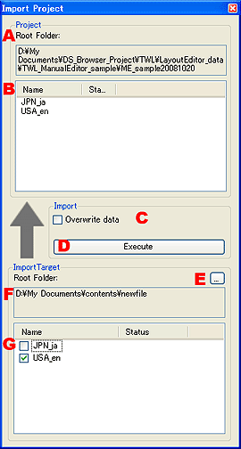

|

|
- ルートフォルダ。
編集中のプロジェクトのルートフォルダのパスを表示します。
- プロジェクト内の言語フォルダ。
プロジェクトに含まれる言語フォルダが表示されています。
- データを上書きする。
インポート先に既に同じ言語フォルダが含まれている場合、上書きする事ができます。
- インポートの実行。
設定した内容で、インポートを実行します。
- インポート対象フォルダの選択。
インポートするフォルダを選択します。
- インポート対象のルート。
選択したインポート対象フォルダのルートを表示します。
- インポート対象言語フォルダの選択。
選択したフォルダ内含まれる言語フォルダを表示し、インポートする言語を選択します。
|